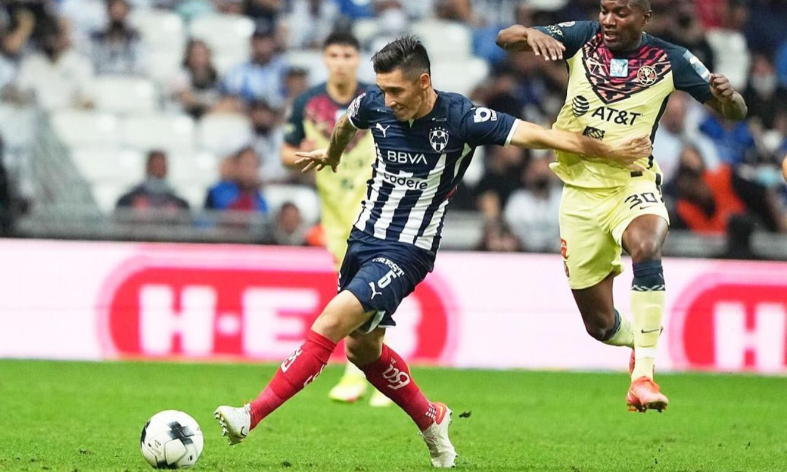
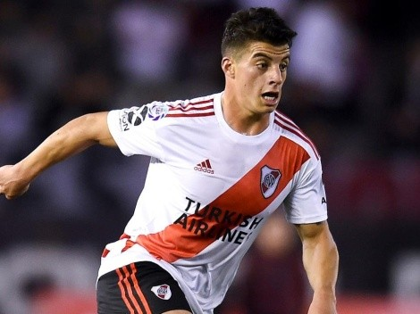
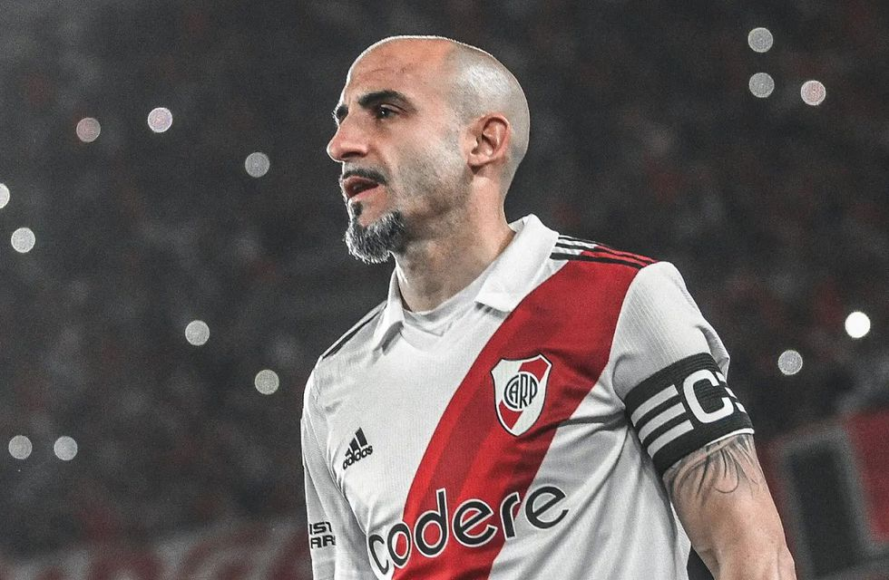

Negociaciones en marcha
Mercado de pases: Altas y Bajas
Matias Kranevitter
El volante de Monterrey es el primer apuntado por el club de Núñez. Si bien ya se produjeron las primeras charlas y el futbolista está dispuesto a regresar a River, deberá resolver cómo será su salida del elenco mexicano. Lejos de llegar a un acuerdo, en las últimas horas viajó junto al resto del plantel de Rayados para comenzar la pretempora en Cancún.
Ignacio Fernandez
El ex mediocampista del Más Grande tuvo algunos sondeos de River, que busca repatriarlo en el futuro inmediato. Hay una deuda del Atlético Mineiro con el club de Núñez que podría facilitar la negociación. “Si quiere volver tiene las puertas abiertas”, afirmó Enzo Francescoli en una nota radial. La llegada de Coudet parece haber complicado el panorama.
Elías López
El lateral estuvo a préstamo en Godoy Cruz de Mendoza, pero regresó antes de tiempo para comenzar a recuperarse de una rotura de ligamentos que sufrió en agosto de este año. Podría tener el alta médica en marzo del 2023. Será evaluado por el nuevo cuerpo técnico.
Javier Pinola
El experimentado defensor anunció pocas horas antes del amistoso frente al Betis que disputaría su último partido como futbolista profesional en Mendoza. Unos días después se confirmó queformará parte del cuerpo técnico de Martín Demichelis. Una baja que obligará a salir al mercado en busca de un defensor zurdo.
